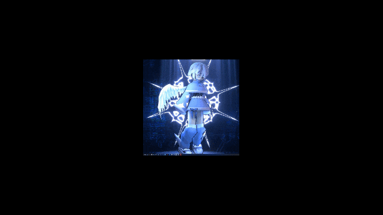

Unter dem Mond
Die Menscheit lebt seit jahrtausenden im Glauben, dass der Mondschein das
Hellste auf der Welt ist, die Dämmerung wird ihnen die Sonne, das Licht,
die Erleuchtung bringen.
Blog Posts:
-
Lodernde Flammen
-
Demut, Vertrauen und Kommunismus
